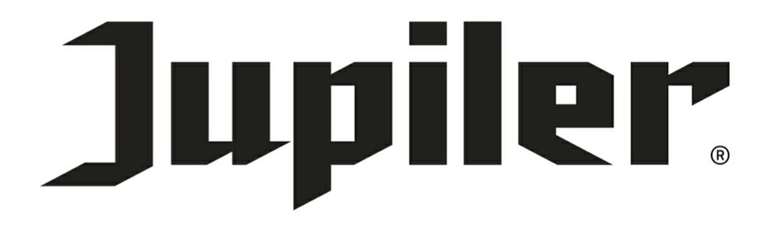

주필러 Jupiler
주필러(Jupiler)는 1966년 출시된 벨기에 맥주이다. 현재 Anheuser–Busch InBev가 리에주의 Piedboeuf Brewery에서 양조하며, 벨기에에서 가장 많이 팔리는 맥주이다.
최종 업데이트

주필러는 어떤 브랜드인가
주필러는 벨기에의 페일 라거 맥주 브랜드이며, 이름은 발상지인 Jupille에서 따왔다. 벨기에에서 판매량이 가장 많은 맥주로, 부피 기준 점유율은 약 40퍼센트이다.
기본 제품은 맥아, 옥수수, 물, 홉, 효모로 만든 알코올 5.2%의 페일 라거로 가장 널리 유통된다. 알코올 3.3%의 저도수 페일 라거와 알코올이 없는 Jupiler 0.0%도 내놓았다.
벨기에 프로리그, 네덜란드 2부 리그 Eerste Divisie, 벨기에 국가대표 축구팀을 후원하며, 슬로건은 'Men know why'이다. 현재는 Anheuser–Busch InBev가 리에주의 Piedboeuf Brewery에서 양조하며, 2018년에는 월드컵 응원을 위해 5개월간 브랜드명을 'Belgium'으로 바꾸겠다고 발표했다.
주필러는 어떻게 시작되고 성장했나
주필러의 기원은 1853년 벨기에 Jupille에 Piedbœuf 양조장이 세워진 것에 있다. 첫 Jupiler는 1950년 'Jupiler Urtyp'라는 이름으로 출시되었다.
1966년에는 알코올 5%의 청량한 페일 라거 'Jupiler 5'가 출시되었고, 이후 이름에서 '5'가 빠졌다. 기본 제품 Jupiler는 알코올 5.2%의 페일 라거로 1966년에 만들어졌으며, 이름은 발상지인 Jupille에서 따왔다.
이 브랜드는 현재 벨기에에서 가장 많이 팔리며, 부피 기준 점유율은 약 40퍼센트이다.
주필러의 브랜드 아이덴티티는 무엇인가
벨기에에서 판매량 1위인 라거 맥주이며, 벨기에 프로리그와 국가대표 축구팀 후원으로 알려진 브랜드이다. 슬로건은 'Men know why'이다.
주필러의 대표 제품과 서비스는 무엇인가
기본 제품 Jupiler는 알코올 5.2%의 페일 라거이다. 2006년에는 알코올 3.3%의 Jupiler Blue를 출시했고, 2016년 6월에는 알코올 3.3%의 Jupiler Blue Lemon and Lime을 내놓았다.
2016년 말에는 Jupiler N.A.의 후속으로 알코올이 없는 Jupiler 0.0%를 출시했다. 2018년에는 활동적인 생활을 하는 사람을 겨냥한 알코올 3.3%의 Jupiler Pure Blonde를 선보였다.
단종된 제품으로는 Jupiler N.A., Jupiler Force, Jupiler Tauro, Jupiler New Tauro가 있다.
주필러는 지금 어떤 상태인가
현재 Anheuser–Busch InBev가 리에주의 Jupille-sur-Meuse 지역에 있는 Piedboeuf Brewery에서 주필러를 양조한다. 벨기에 맥주 시장에서 부피 기준 약 40퍼센트를 차지하며 판매량 1위를 유지하고 있다.
2016년 말 무알코올 Jupiler 0.0%를, 2018년 Jupiler Pure Blonde를 내놓아 저도수·무알코올 제품군을 넓혔다.
주필러 로고는 어떻게 변해왔나
자주 묻는 질문
주필러는 어느 나라 브랜드인가요?
주필러는 벨기에의 식음료 브랜드입니다.
주필러는 언제 설립되었나요?
주필러는 1966년 설립되었습니다.
주필러의 브랜드 아이덴티티는 무엇인가요?
벨기에에서 판매량 1위인 라거 맥주이며, 벨기에 프로리그와 국가대표 축구팀 후원으로 알려진 브랜드이다.
주필러의 대표 제품은 무엇인가요?
기본 제품 Jupiler는 알코올 5.2%의 페일 라거이다.
주필러는 현재 어떤 상태인가요?
현재 Anheuser–Busch InBev가 리에주의 Jupille-sur-Meuse 지역에 있는 Piedboeuf Brewery에서 주필러를 양조한다.
주필러의 본사는 어디에 있나요?
주필러의 본사는 리에주에 있습니다(위키데이터 기준).
주필러의 공식 웹사이트는 어디인가요?
주필러의 공식 웹사이트는 https://jupiler.be 입니다.
출처와 검증
주필러 관련 참고: 공식 웹사이트 · 위키데이터 Q153960 · 한국어 위키백과 · 영어 위키백과. 브랜드명은 한글과 원어를 함께 표기하되 데이터에 없는 표기는 만들지 않습니다. 기원 국가·설립연도는 검수된 정의문에서 확인된 값을 우선하고, 없을 때만 공식 웹사이트 URL이 일치하는 위키데이터 개체의 값을 씁니다. 위키데이터 값은 2026-11-07 기준입니다.